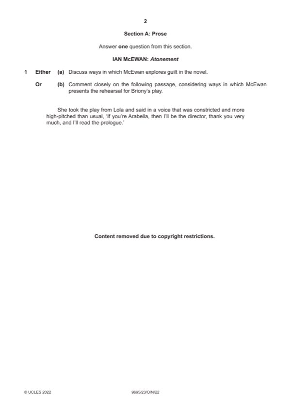

Question 1

Original paper page 2
Part 1(a) — solution
Answer: OR
Discuss ways in which McEwan explores guilt in the novel. 25
Mark according to the levels of response marking criteria.
OR
Mark points
- Correct result: OR
Part 1(b) — solution
Comment closely on the following passage, considering ways in which 25
McEwan presents the rehearsal for Briony’s play.
Mark according to the levels of response marking criteria.
NGŨGĨ WA THIONG’O: Petals of Blood
EITHER
Mark points
- Include the ideas shown in the solution above.
Part 1 — solution
- Evidence of a restricted ability to select and use relevant knowledge to
- Little or no evidence of awareness of the text type (poetry, prose or drama)
- Little or no appreciation of literary methods such as language, form and
- Little or no evidence of any independent response and the approach to and
- Answers will be generalised with little to no relevance or structure; asserting
Mark points
- Evidence of a restricted ability to select and use relevant knowledge to
- Little or no evidence of awareness of the text type (poetry, prose or drama)
- Little or no appreciation of literary methods such as language, form and
- Little or no evidence of any independent response and the approach to and
- Answers will be generalised with little to no relevance or structure; asserting